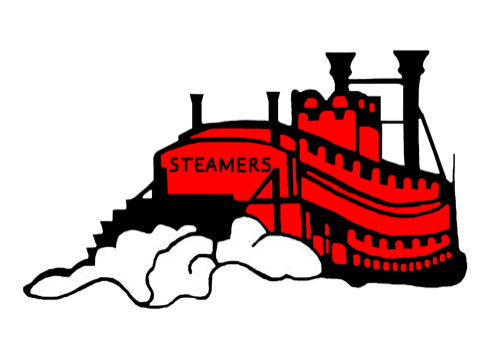

Riverbend Schools · Tech Dept
Look up a student or device, check devices in and out, and track repairs and assignments across the district.
Submit and track technology support tickets, add comments, and follow a request through to resolution.
See whether Google, Canvas, Clever, PowerSchool and the rest of the district's services are up or having problems.
Tech Trivia of the Day